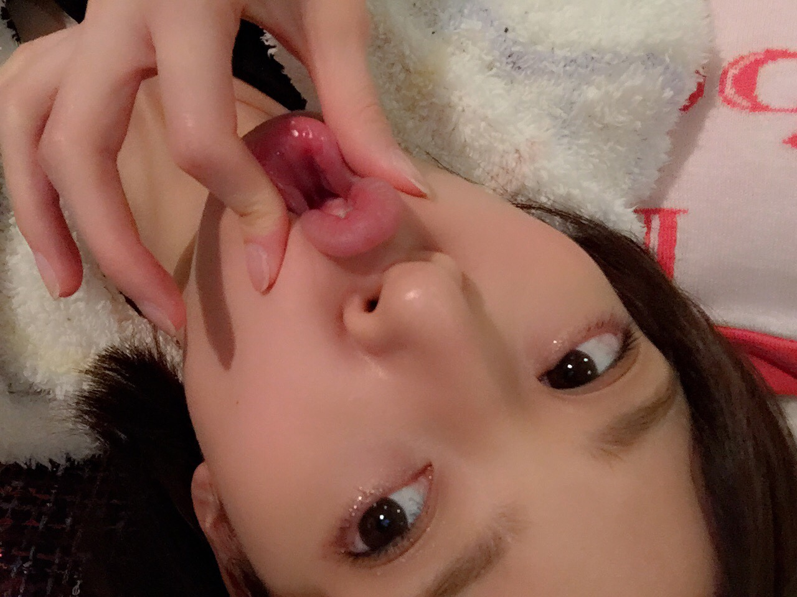

| 2015/01 16 Fri | 英語しゃべれるようになりた い今年の目標にしようかな！！ |
昨日と一昨日は福岡にアルバムのキャンペーンに行ってたよー！
キャンペーンできちんと福岡行くの初めてだったんだけど、福岡最高に好きになったー！！
みんないい人だし食べ物美味しいし！
住みたくなったーーー(((o(*ﾟ▽ﾟ*)o)))
しかもね！ラジオで入れ違いでfumikaさんと久しぶりに会ったのー！！

EndlessRoadのMVでお世話になってから、
プリンシパルとかも観に来てくれてるんだよー！！
会えて嬉しかったーーー、わたしが痩せたことにも気付いてくれてびっくりした！笑
そうなんですよ、最近なぜか痩せて、、、
こんどfumikaさんとご飯にいきたいなーー(((o(*ﾟ▽ﾟ*)o)))
fumikaさんもアルバム出されたんだって！
戴きましたありがとうございます(((o(*ﾟ▽ﾟ*)o)))
EndlessRoadも収録されてる！嬉しい(*^◯^*)
今日は時間がたっぷりあったから晩ご飯ゆっくり作って食べてゴロゴロしてるなうです。
今日はアイラインをひいてません。

おねむ

おきた

びよーん

うー
ブログに何枚も写真を貼る手段を得てからなんか楽しくなってきた
あっ、今日のラジオ、私たちの物語
聴いてくれましたか？？(@￣ρ￣@)
今日は鬼教官役をやりました！
そのままじゃんと思われてるかもだけど、
実生活では真逆のタイプですわたし、、
後輩にストレートに注意できないんだよね、昔から
来週はななみん星から来たミラクルななみんを演じます
ぜひ聴いてね！
握手会ではやらないから！
ミラクルななみんはラジオ限定と前もってお伝えします！笑
じゃあおやすみー♪( ´θ｀)ノ
コメント(1013)
2015/01/16 23:42